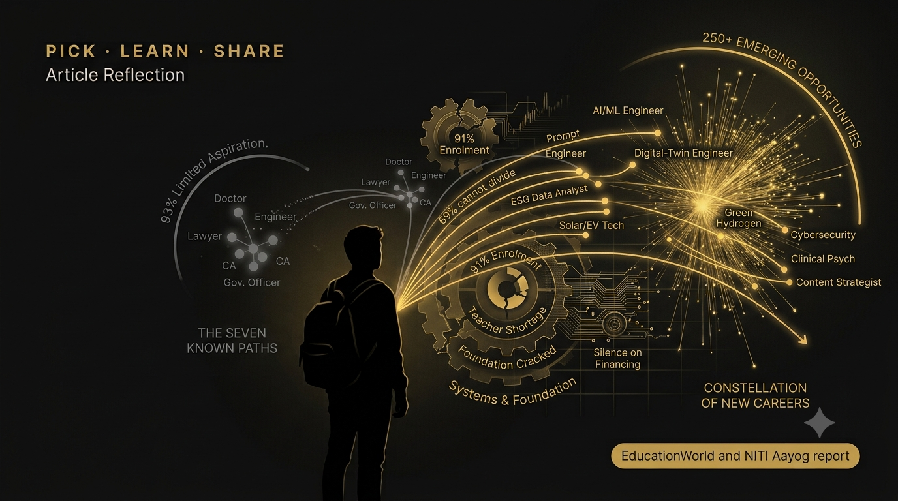

Two Numbers That Should Keep Us Awake: 69 Percent and Seven

Two numbers, one from the foundation and one from the future — and why only one of them is ours to fix.
A recent EducationWorld editorial titled “Criminal Negligence: Official Confirmation” landed on my desk, and it has not left my head since. Its argument is deceptively simple: the government’s own think-tank has now confirmed, in writing, what educators have been saying for a quarter of a century. India’s public school system is failing at the foundation.
The editorial builds its case on NITI Aayog’s “School Education System in India: Temporal Analysis and Policy Roadmap for Quality Enhancement” report. I want to do two things with it here. First, sit with the numbers honestly. And second, push past where the editorial stops — because the crisis is not only that our schools are under-built. It is also that even the children who do make it through are walking into a future they have never been shown.
1. The Foundation Is Cracked — Officially
Start with the scale, because it is staggering. India runs 1.47 million schools educating 247 million children — the largest school-going cohort on the planet. Primary enrolment sits at 91 percent. On paper, access is close to solved.
But access is not the same as learning, and the report says so plainly. According to NITI Aayog’s own figures, the physical foundation is missing across tens of thousands of schools:
- 98,592 schools lack functional girls’ toilets, and 61,540 have no usable toilets at all.
- 59,829 have no hand-wash facilities; 119,000 have no electricity.
- 518,910 have no computers and 536,550 have no internet connection.
Then comes the number that stops you cold. The report confirms that over half of routinely promoted Class V children cannot read a Class II text, and 69 percent cannot solve a simple division sum. These are not dropouts. These are the children still in the system, being pushed up grade by grade.
A teacher shortage sits underneath all of it. India employs 10.1 million teachers, yet 7 percent of all schools — 104,000 of them — are run by a single teacher. Meanwhile government-school enrolment has fallen from 71 percent in 2005 to 49.24 percent in 2024–25. Parents, even in the poorest households, are voting with their feet.
2. The Money Question Nobody Answers
The EducationWorld editorial makes one point I keep returning to. For all its 204 pages, the report stays conspicuously silent on financing. And that silence has history.
The Kothari Commission recommended 6 percent of GDP for education back in 1967. The National Education Policy 2020 reiterated the same 6 percent target. Yet for over seven decades, actual combined spending by the Centre and states has averaged a mere 3.5 percent of GDP. Fifty-eight years of a target we have never once hit. A roadmap without a budget is, as the editorial puts it, well-intentioned rhetoric.
3. Where the Editorial Stops, the Real Worry Begins
Here is where I want to add to the article rather than just echo it. Suppose we fixed every toilet, wired every classroom, and hired every missing teacher tomorrow. We would still have a second, quieter crisis — one the infrastructure numbers never capture.
Ask a bright Class 10 student in Erode, or Salem, or almost anywhere in India, to name the careers open to them. You will hear the same short list: doctor, engineer, lawyer, CA, government officer. A landmark survey of over 10,000 students aged 14–21 found that 93 percent were aware of only about seven career options — out of more than 250 careers across 40 domains that actually exist in India.
It gets worse when you look at who is guiding them. The Bharat Career Aspirations Report 2025, a UN-backed study of more than 21,000 students in Classes 9–12, found that only about 10 percent of Indian students have access to professional career counselling. A separate 2024 study by FLAME University tells the same story from the other side: while 68 percent of students report some form of counselling, a full quarter — 25 percent — have none at all, and another 7 percent have no structured support. Whichever number you take, the picture is the same: the overwhelming majority are choosing their entire future in the dark, on advice from family, friends and whatever the internet served up last.
My favourite illustration of this comes from green careers. Surveys show young Indians care deeply about climate — but only 35 percent of urban youth can even say what a “green job” actually is. As one industry leader put it, “sustainability” defaults in a student’s mind to an ESG analyst in a Mumbai high-rise, never a process engineer at a wastewater plant in a Tier-2 town. The jobs exist. The aspiration does not. That is not a jobs gap. It is an imagination gap.
4. The Careers Our Students Have Never Heard Of
This is the part I most want our students and parents to sit with. The World Economic Forum’s Future of Jobs Report 2025 projects that structural change will create 170 million new jobs and displace 92 million by 2030 — a net gain of 78 million. And nearly 39 percent of the skills a job needs today will change within five years.
India sits right at the centre of this. Two-thirds of companies operating here (67 percent, against a 47 percent global average) say they will need to reach into new, diverse talent pools to fill emerging roles — and 30 percent plan to hire on skills rather than degrees. Many of the roles below did not exist in an org chart ten years ago:
| Emerging role | What they actually do | A realistic entry route |
|---|---|---|
| AI / ML Engineer | Build the systems behind fraud detection, recommendations, medical diagnostics | B.Tech CSE, BCA, or B.Sc + certifications |
| Prompt Engineer / AI Trainer | Teach and test AI systems so they behave safely and usefully | Any degree + strong language & logic skills |
| Digital-Twin Engineer | Build live virtual models of factories, plants and grids | Mechanical / electrical + digital skills |
| ESG / Climate-Risk Data Analyst | Turn sustainability data into decisions for banks and firms | Economics, stats, or environmental science |
| Solar / EV-charging Technician | Install and maintain India’s clean-energy backbone | ITI / diploma — no four-year degree needed |
| Green Hydrogen & Battery-Storage Roles | Run the plants powering the energy transition | Chemical / electrical engineering, diploma |
| Cybersecurity Specialist | Defend banks, hospitals and government from attack | B.Tech CSE (Cyber), certifications |
| Clinical Psychologist / Counsellor | Meet a mental-health need the system cannot | B.Sc/BA Psychology → M.Phil / clinical route |
| Content Strategist / Creator | Build audiences and brands in the creator economy | Any stream + storytelling & production skills |
The demand behind these is not speculative. India’s AI market is projected to reach $17 billion by 2027; the National Green Hydrogen Mission alone may create over 6 lakh clean-energy jobs by 2030; and India’s commitment to 500 GW of renewable capacity is expected to need roughly 3.5 crore new jobs across solar, wind, storage and grid work. There is even a fast-growing mental-health field — over 150 million Indians need support, served by fewer than 12,000 registered clinical psychologists. And AI-focused roles in India already command a 28 percent wage premium over comparable jobs.
5. What This Means for Us
The EducationWorld editorial is right that budgets and buildings are the state’s job, and we should hold it to that. But the imagination gap is ours to close — teacher by teacher, parent by parent, conversation by conversation. A few things I keep coming back to:
- Start early. Career conversations belong in Classes 8–9, not the panic of Class 12, so students have time to explore and build a profile.
- Widen the map, don’t just push the list. Every time a student says “doctor or engineer,” our job is to add three roles they have never heard of and show that they are real, paid, and reachable.
- Bring parents in. The narrowing usually starts at home, with love and the best of intentions. Parents cannot point to careers they themselves have never encountered.
- Pair domain with digital. The safest advice for 2030 is not “pick tech” — it is “pick a domain you care about, then add data and AI fluency on top.” A doctor who understands health-tech beats a pure specialist every time.
Two numbers frame this whole piece for me. 69 percent of promoted children cannot do basic division. And 93 percent of teenagers can name only seven careers. The first is a failure of foundation. The second is a failure of imagination.
We cannot fix the first alone — but the second is squarely within reach of anyone who teaches, counsels, or parents a child. That is the work.
When a family arrives certain that the only real futures are “doctor, engineer, CA,” this is the piece I reach for. It lets me reframe the conversation from “which of the seven?” to “which of the two-hundred-and-fifty?” — and to show, role by role, that the new map is real, paid, and reachable from where the student already stands.
I’m grateful to the editors of EducationWorld for the piece that sparked this reflection — “Criminal Negligence: Official Confirmation.” The diagnosis is theirs; the detour into careers and the future of work is mine, built on it.
Sources & Further Reading
- “Criminal Negligence: Official Confirmation,” EducationWorld editorial (2025), on the NITI Aayog school-education report.
- NITI Aayog — School Education System in India: Temporal Analysis and Policy Roadmap for Quality Enhancement. niti.gov.in
- World Economic Forum — Future of Jobs Report 2025. weforum.org
- WEF — The future of jobs in India (2025). weforum.org
- Mindler survey — “Most students aware of just seven career options,” Business Standard (2019). business-standard.com
- Bharat Career Aspirations Report 2025 (UN-backed), via Career Ahead. careeraheadonline.com
- FLAME University career-counselling access study (2024), via India Career Centre — “The Career Awareness Gap.” indiacareercentre.com
- “Young Indians care about climate — so why aren’t they choosing green careers?” People Matters (2026). peoplematters.in
- Future Jobs in India — verified role & salary data, Curominds (2026). curominds.com
- Government of India (PIB) — AI@Work: Driving Productivity, Jobs, and Innovation. pib.gov.in
Figures are drawn from the sources above; where a report gives a range or projection, that is noted as such. Reflection and framing are my own. This piece builds on the EducationWorld editorial “Criminal Negligence: Official Confirmation” and the underlying NITI Aayog report.